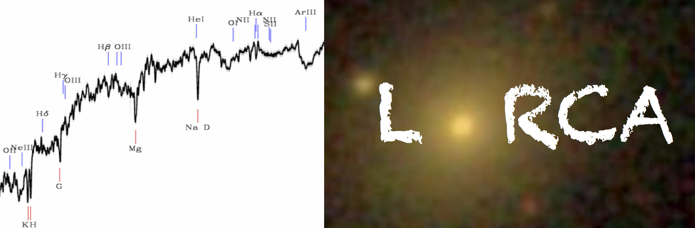
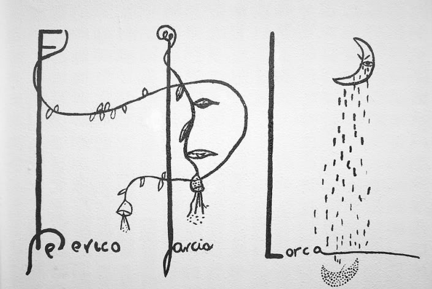
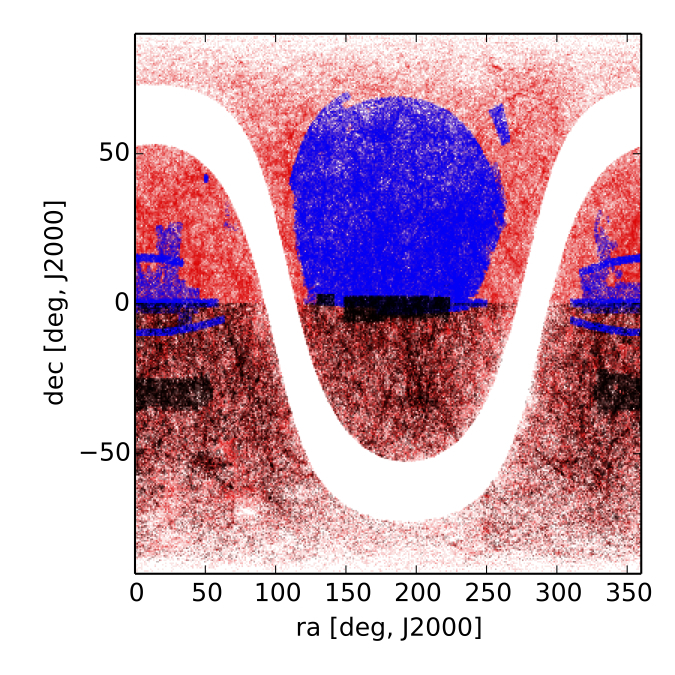
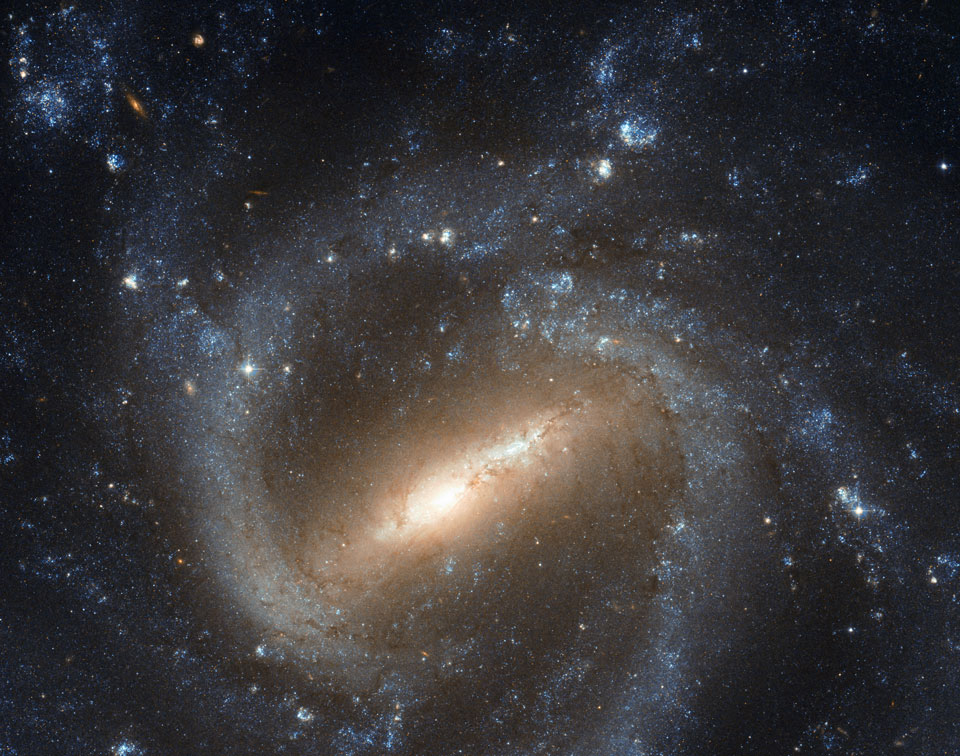
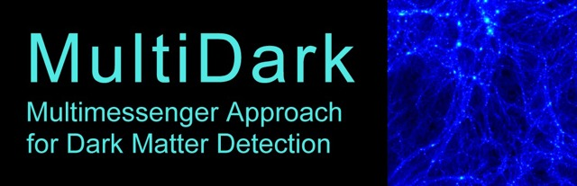

|  |
|  |
LoRCA: Low Redshift survey at Calar Alto
Mapping the large scale structures of the local Universe using the Schmidt-telescope of the Calar Alto Observatory |
|  |
The Baryon Acoustic Oscillation (BAO) feature in the power spectrum of galaxies provides a standard ruler to measure the accelerated expansion of the Universe. To extract all available information about dark energy, it is necessary to measure a standard ruler in the local, z less than 0.2, universe where dark energy dominates most the energy density of the Universe. Though the volume available in the local universe is limited, it is just big enough to measure accurately the long 100 Mpc/h wave-mode of the BAO. Using cosmological N-body simulations and approximate methods based on Lagrangian perturbation theory, we construct a suite of a thousand light-cones to evaluate the precision at which one can measure the BAO standard ruler in the local universe. We find that using the most massive galaxies on the full sky (34,000 sq. deg.), i.e. a K(2MASS) brighter than 14 magnitude-limited sample, one can measure the BAO scale up to a precision of 4% and 1.2% using reconstruction). We also find that such a survey would help to detect the dynamics of dark energy.Therefore, we propose a 3-year long observational project, named the Low Redshift survey at Calar Alto (LoRCA), to observe spectroscopically about 200,000 galaxies in the northern sky to contribute to the construction of aforementioned galaxy sample. For more details, please read our paper. |
|
|
Instrumental set-up LoRCA will observe spectra for about 0.2 million galaxies of the north galactic cap that were not previously observed by SDSS with the most-suited northern facility: the Schmidt telescope at the Calar Alto observatory. The LoRCA survey would be highly complementary to the Australian TAIPAN survey, that aims observing order of a million low-redshift galaxies in the south galactic cap, starting in 2016. This survey would use the Calar Alto 80-cm Schmidt telescope refurbished with a cartridge that will host about 400 robotic fiber positioners in the focal plane. Optical fibers carry light from the focal plane to the slithead, which feeds one spectrograph permanently mounted on the floor in a control environment room. The field-of-view that we intend to cover with a single exposure is by 30cm on the focal plane, i.e. about 50 square degrees. The fiber core will be 100 microns, which yield 6.7 arcsec on the sky. |
|
|
In the following links, you can find: Documents from the kick-off workshop; and its website Simulations, mock light cones; and target catalogs. |
|  |
Contact persons J. Comparat, j.comparat _at_ csic.es F. Prada, f.prada _at_ csic.es |
Institutions:
|  |